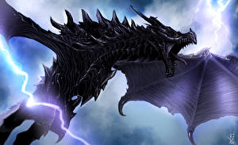

Let's give you a brief overview of what our page is about:
- Brief History and Game Development
- Characters and Protagonists
- Story and Lore
Brief History and Game Development
The first Elder Scrolls game to be released was TES: Arena. It came out in 1996 and was fairly well received by critics and players alike.
Following the success of Arena, Bethesda Softworks continued to develop and release more games in the series, including:
- The Elder Scrolls II: Daggerfall (1996) - Known for its huge game world and deep lore.
- The Elder Scrolls III: Morrowind (2002) - A groundbreaking RPG with a rich, open-world experience.
- The Elder Scrolls IV: Oblivion (2006) - Introduced more advanced graphics and gameplay mechanics.
- The Elder Scrolls V: Skyrim (2011) - Became one of the most popular RPGs of all time, praised for its vast open world and modding community.
Characters and Protagonists
The Elder Scrolls series features a diverse range of characters and protagonists, each with their own unique stories and abilities. Some of the notable characters include:
- The Nerevarine - The main character of Morrowind, prophesied to defeat the evil Dagoth Ur.
- The Hero of Kvatch - The protagonist of Oblivion, who closes the gates of Oblivion and saves Tamriel from destruction.
- The Dragonborn - The main character of Skyrim, who has the power to absorb dragon souls and use powerful Shouts.
Story and Lore
The Elder Scrolls universe is rich with lore and history. The series is set in the continent of Tamriel, which is home to various provinces and races, each with its own culture and history. Some key elements of the lore include:
- Aedra and Daedra - The divine and demonic beings that play a crucial role in the world's creation and ongoing events.


- The Elder Scrolls - Mysterious artifacts that are said to contain the knowledge of past, present, and future events.
- Dragon Wars - A significant event in the history of Tamriel, where dragons once ruled and were eventually overthrown by humans.

- The Septim Dynasty - The ruling family of Tamriel for several centuries, whose downfall leads to the events of the later games.
Each game in the series expands on the lore, introducing new stories, characters, and events that enrich the overall narrative of The Elder Scrolls universe.